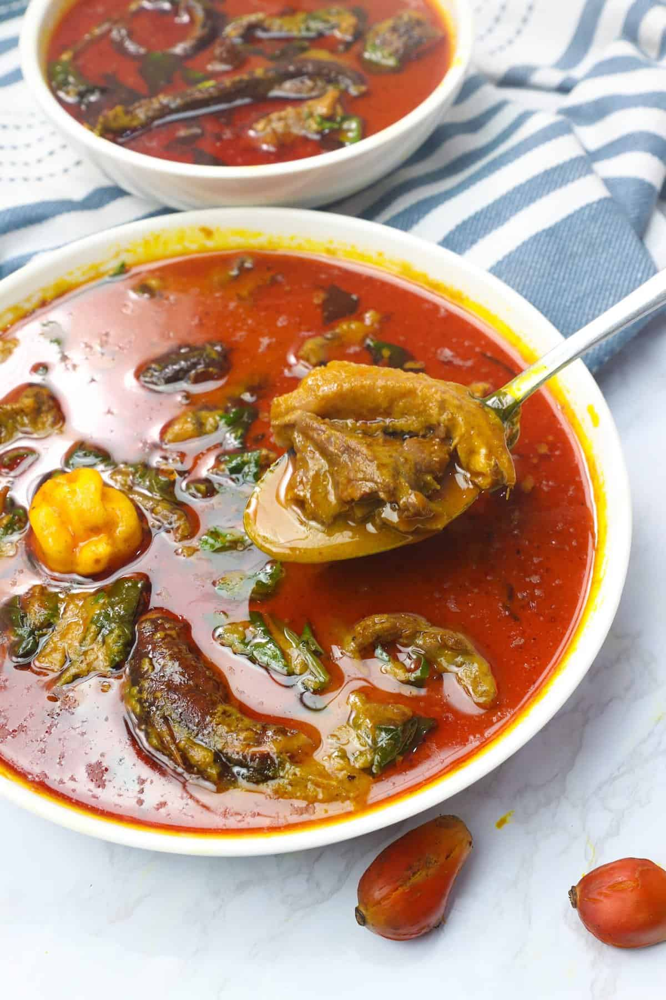

Banga Soup

Description
Banga/Palm Nut Soup – A West African soup made from heavily pounding palm nut fruit to extract the pulp.
Then it’s simmered in assorted meat, spices, and bitter leaf or spinach. So rich and hearty!
Ingredients
- Beef
- Palm Nuts
- Fish
- Bouillon
- Vegetables
Steps To Make
- Prep the Beef – Add meat, salt, garlic, smoked paprika, black pepper, and onion in a medium-sized saucepan,
and cook until tender, approximately 30-40 minutes. You can halve this process by using a pressure cooker or Instant Pot.
Reserve beef stock.
- Palm Nuts – Place palm nuts in a large pot. Add water to cover the palm nuts and boil until tender (about 1 hour).
- Assemble – Add the reserved beef stock, cooked meat, smoked fish, crayfish, beef bouillon, and salt.
Bring to a boil and let it simmer for 15-20 minutes until it is nice and thick.
- Add Vegetables – Throw in the chopped spinach, and adjust for soup consistency with water or stock.
Adjust for salt and pepper and simmer for 2 more minutes.
- Serve over rice or kwacoco.